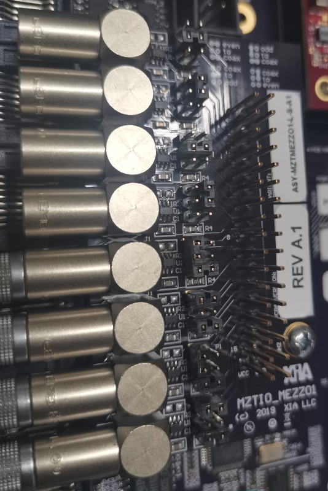

代码¶
PS code¶
docs #PKU MZTIO GUIDES
static # css js
webops
Pixie16_MZTrigIO_Manual.pdf
MZTIOCommon.c
MZTIOCommon.h
MZTIODefs.h
clockprog.c
progfippi.cc
settings.ini
status.c
status.cgi
makefile
pkulogo100.jpg
why.jpg
webopspasswords
index.html
log.html
status.html
support.html
PL code¶
downscale¶
module downscale
(
din,
dout,
down,
clk
);
parameter DATA_W = 16;
input [DATA_W-1:0] down;
input din;
output dout;
reg dout;
input clk;
endmodule
scaler¶
module scaler
(
din,
dout ,
endcount,
clk
);
parameter DATA_W = 32;
output[DATA_W-1:0] dout;
reg [DATA_W-1:0] dout;
input din;
input endcount;
input clk;
endmodule
signaldelay512¶
module signaldelay512
(
din,
dout,
delay,
clk
);
output dout;
reg dout;
input [9:0] delay;
input din;
input clk;
endmodule
signalextend512¶
module signalextend512
(
din,
dout,
extend,
clk
);
input din;
output dout;
reg dout;
input [9:0] extend;
input clk;
endmodule
IP core¶
FIFO
module fifo_delay512(clk, srst, din, wr_en, rd_en, dout, full, empty,
data_count)
/* synthesis syn_black_box black_box_pad_pin="clk,srst,din[0:0],wr_en,rd_en,dout[0:0],full,empty,data_count[9:0]" */;
input clk;
input srst;
input [0:0]din;
input wr_en;
input rd_en;
output [0:0]dout;
output full;
output empty;
output [9:0]data_count;
endmodule
xillydemo¶

// The configuration of the FrontIO_A/B/C is completely flexible. For example, if you connect the RJ-45 of a Pixie-16 to FrontI/O A 0-3 (the upper RJ-45 on the trigger board), signals will connect
// FO5 - Front I/O A 3 FrontIO_Aena==0
// FO1 - Front I/O A 0 FrontIO_Aena==0
// FI5 - Front I/O A 1 FrontIO_Aena==1
// FI1 - Front I/O A 2 FrontIO_Aena==1
// F0 5p/5n synchronization status / multiplicity result channel 0(pku firmware)
// FO 1p/1n not used / multiplicity result channel 1(pku firmware)
// FI 5p/5n external fast trigger
// FI 1p/1n external validation trigger
// FrontIO_Aout [3] [0] [7] [4] [11] [8] [15] [12]
// FrontIO_Ain [1] [2] [5] [6] [9] [10] [13] [14]
- FRONT_X_OUTENA
== 1 表示从 MZ 往前面板驱动输出，代码里面操作out
== 0 表示从前面板往 MZ 驱动输入，代码里面操作in
- LVDS_X_OUTTENA
== 1 表示驱动网口向外输出
== 0 表示驱动网口向里输入
如果MEZZ01开启输入模式，则必须设置 FRONT_X_OUTENA==0 && LVDS_X_OUTTENA==1 ，其余模式下，MEZZ01跳针全部设置成输出模式，此时网口可用于输入或者输出模式。
当前，在前面板 C 口配置 一个 MEZZ01 模块，其中前四通道设置为信号输入，分别连接[1]/[2]/[5]/[6]，后四个通道设置为信号输出，分别连接[9]/[10]/[13]/[14]。 该配置模式下，C口对应的四个网口仍然可用于多重性的输入，此时参数 FrontIO = 0x6600, LVDSIO = 0x6666。如果不使用 MEZZ01 模块，只连接网口与P16模块，则参数 FrontIO/LVDSIO 均设置为 0x6666。
示波器监视模式：
0: A1_1
1: A1_2
2: A2_1
3: A2_2
4: A3_1
5: A3_2
6: A4_1
7: A4_2
8: B1_1
9: B1_2
10: B2_1
11: B2_2
12: B3_1
13: B3_2
14: B4_1
15: B4_2
16: C1_1
17: C1_2
18: C2_1
19: C2_2
20: C3_1
21: C3_2
22: C4_1
23: C4_2
24: DPM FULL 时处于低电平，统计处于高电平时间即为不丢失数据的时间
25: SYNCOUT，start=1，stop=0
26: Ext_ValidTrig_In 有信号时处于 High
27: Ext_FastTrig_In 有信号时处于 High
28: debug ch1
29: debug ch2
30: debug ch3
31: debug ch4
32:
33:
34:
35: